I am in my final year at the University of Waterloo for Mechatronics Engineering.
I have 2 years of diverse mechanical engineering experience in the aerospace industry at Pratt & Whitney Canada. I have proven abilities to develop high performance designs from initial conception to final production. I am passionate about integrating mechanical, software and electrical engineering to develop new innovative products.
If my skills or experience align with any potential opportunities you may have, please feel free to reach out through LinkedIn or email, I’d love to hear from you!
ECN (Externals, Controls & Nacelles) Design/Drafting Department Compressor Design/Drafting Department Pratt & Whitney Canada
In my latest position, I have held greater responsibility while working on new innovative projects. In the engineering hub of Design/Drafting, I collaborated with many departments including Projects, Detail Design, Materials, Manufacturing and Configuration Management. I gained a full spectrum exposure to product design from initial conception to final production. I have become skilled in managing and switching between multiple projects. Overall, I worked on 40+ projects while releasing 100+ drawings and models.
Drafted 2D engineering drawings and 3D models for using CATIA V5 using Drafting Room Manual (DRM) standards and P&WC best practices [AYME Y14.5-2009]
Proficiency in CATIA V5 modeling and drafting packages including several workbenches; Part Design, Assembly Design, Drafting, Generative Shape Design, Generative Sheetmetal Design, Tubing Design, DMU Navigator DMU Space Analysis and Generative Structure Analysis
Proficiency in ENOVIA V5 & V6 in version control, approval routes, BOM & change management
Developed understanding for various manufacturing processes: castings, forgings, machined, sheet metal forming, injection molded, 3D printed, additive (SLS)
Developed meticulous attention to detail while drafting large (40+ sheet) drawings and assemblies including clearance inspection, standards review, checklist completion, documentation consultation
Participate in international design review meetings with suppliers and partners
Created Note Form Drawings (NFD) & Supplier Furnished Information (SFI) models for supplier parts
Created production standard models/drawings while applying GD&T & conducting tolerance stack ups
Prepared SPD (Supplementary product data) / SMD (Supplementary Material data) sheets conforming to the Design layout, Material Engineering and related drafting documents
Utilized parametric modelling for standard and tabulated parts
Worked on up to 5 projects concurrently, quickly switching focus from one to another
Provide support to Projects for projected timeline and resource allocations
Self-motivated to track and coordinate signature requirements from key departments to release parts
Completed extensive training courses including intellectual property & export classification
Notable Projects:
Completed Interface Control Document (ICD) drawings with complex 10+ part axial & radial stack ups for coordinating part design and assemblies from multiple partners
Designed new injection molded composite clamps to replace machined aluminum clamps, applied new drawing notes and controls, investigated cost & weight savings, conducted FEA in ANSYS with Static Structures to validate design, wrote Design Summary Memo (DSM)
Worked on testing project with redesigned experimental bearing housing for reduced vibrations; drafted models and drawings for multiple parts, conducted axial tolerance stack up, designed mating features for assembly, coordinated interference/clearance fits
Designed new additive manufacturing (laser powder bed fusion) brackets to replace sheet metal formed brackets, iterative designs improved for dynamic and static stresses, validated designs for manufacturability and installation
Worked to reduce manufacturing steps for flash welded integrated bladed rotor, reduced inspection costs by modifying design features and applying GD&T, presented design alternatives to Design groups
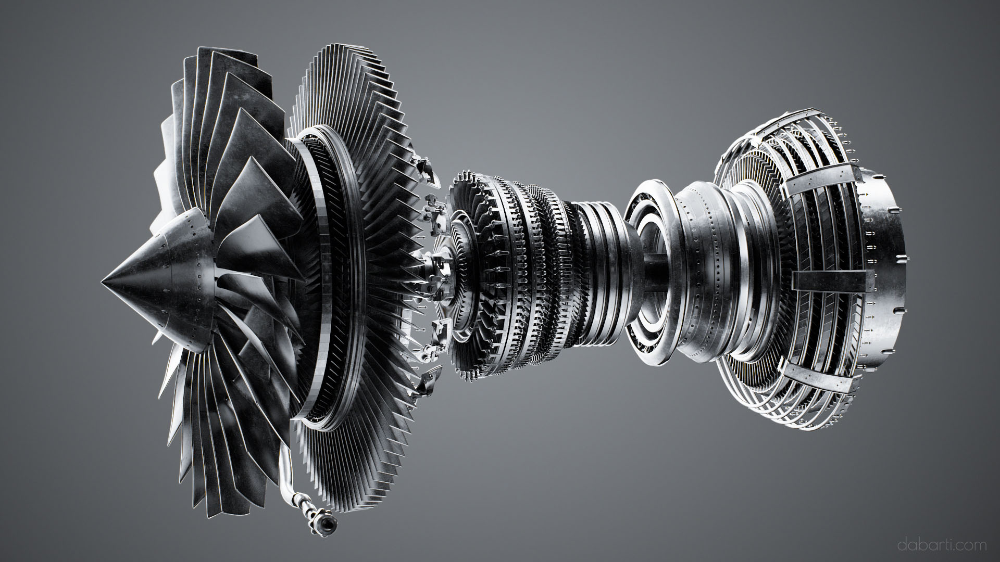
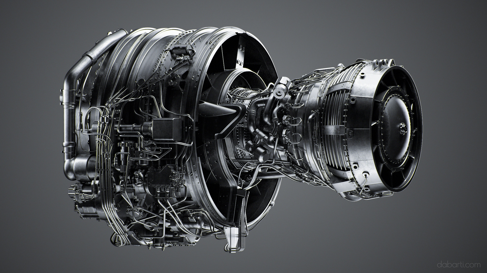
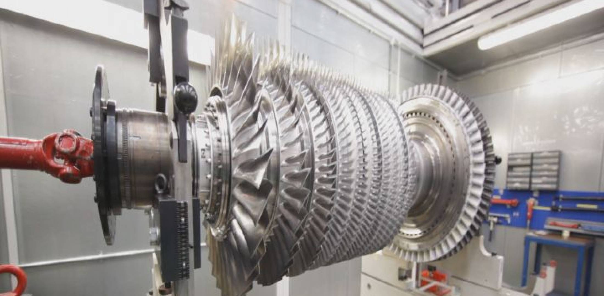
Cancer Analysis Research
Vision & Image Processing Lab University of Waterloo
In my research, I worked on lung cancer analysis through CT scans. Using MATLAB, I implemented a polar coordinate based edge detection algorithm. Some initial image processing was required to select and clean the CT scan from an array of scans. In traditional techniques, a healthcare professional must create a click-driver polygon to isolate the tumor. Using the single click algorithm my team developed, the same result is produced with near-perfect accuracy in a very fast time. The polar coordinate system was used to create “bins” that originate from the single click inside the tumor. Then, using statistical analysis, “bins” can be compared to isolate the tumor. The new algorithm performed the same or better than established algorithms (Region Growing & Intelligent Scissors) in Sensitivity, Specificity, Accuracy, Dice and Jaccard. The project was completed in collaboration with Sunnybrook Research Institute in Toronto, Canada. The research lead to a abstract pubication at the 2016 Imaging Network Ontario Symposium. The title was “Single-Click Lung Nodule Contouring Method Using a Hierarchical Conditional Random Field”.
In my second research project with the Vision & Image Processing Lab, I created a graphic user interface using MATLAB GUIDE to process prostate cancer MRIs. The interface allowed one to process raw MRI scans and execute multiple algorithms on them.
I was awarded the President's Research Award twice in Sep 2015 & May 2016 for my work.
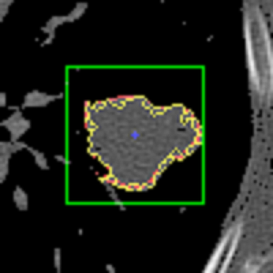
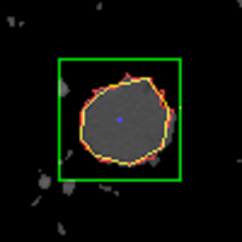
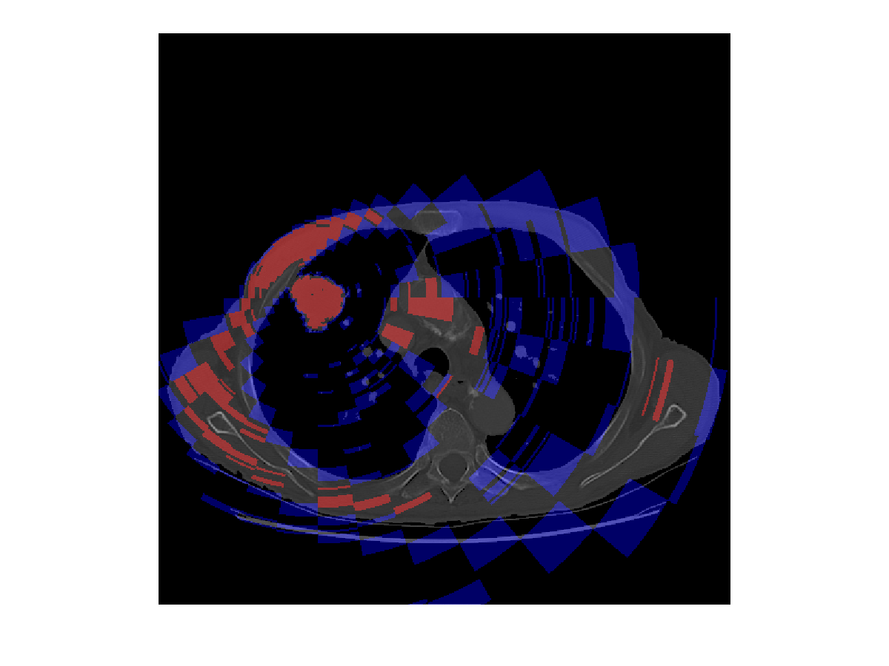
Autonomous Underwater Vehicle
Project Manager & Mechanical Lead University of Waterloo
Designed PVC pipe frame, 3D printed propeller covers, sensor supports and motor mounts
Created CAD models for parts and assemblies in SolidWorks
Analyzed hydrodynamics for prop covers in ANSYS AIM
Conducted simulated and empirical testing to verify and compare design alternatives
Performed sensor selection and testing for ultrasonic, IMU & light sensors
Utilized diverse tools including drill press, Dremel tool, 3D printer, soldering iron & oscilloscope
Experimented with many joining and sealing methods including marine weld, epoxy & bolts
Coordinated with electrical and software team members to streamline product integration
Developed responsibility chart, budget and project schedule using Gantt chart
Large Turbofan Engine Product Definition Department Pratt & Whitney Canada
Working in this department, I gained exposure to a fast paced, heavy workload environment. I adapted quickly to deliver on tight deadlines. I collaborated and verified work from global offshore team and partner organizations. I developed strong communication skills and a results driven attitude. I developed a technical understanding of aftermarket and configuration management processes. In the end, I completed 88 SBs, inspected 200+ offshore team documents and created 100+ IPC illustrations.
Created exploded assembly illustrations using CATIA V5 and Auto-Trol Tech Illustrator software for Service Bulletins (SB) and Illustrated Parts Catalogues (IPC)
Annotated graphics for technical writers using S1000D standards and industry best practices
Utilized ENOVIA PLM system for searching engineering documents and inspecting 3000+ part BOMs
Inspected work and communicated markups to Accenture team in India using SharePoint
Frequently visited shop floor to inspect parts and validate assembly procedures
Skilled at reading 30+ sheet engine cross section drawings and Assembly Floor Sheet (AFS) drawings
Developed understanding for P&WC Change Management objects (CO, CR, CA, classifications & codes)
Developed understanding of aftermarket organization processes including overhaul & maintenance
Coordinated with P&WC suppliers and partners to resolve issues quickly
Delivered results for strict deadlines through job tracking and efficient time management
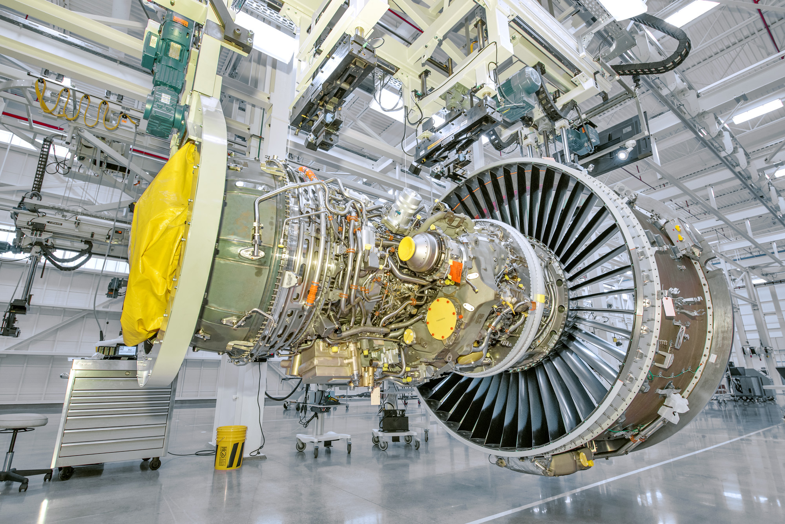
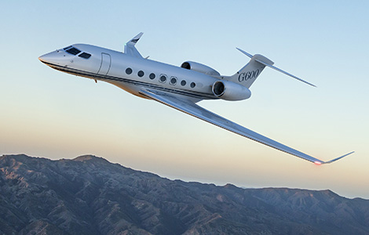
Bridge Design
Project Manager University of Waterloo
Created simplified 2D finite element solver in MATLAB for rapid design evaluations
Conducted extensive testing on balsa wood sample to empirically determine material parameters
Performed FEA on truss elements using ANSYS AIM and SolidWorks models
Utilized power tools for rapid prototyping and laser cut final bridge parts
Planned and performed physical stress tests to evaluate prototype designs
Presented final bridge design with justification of design choices in symposium
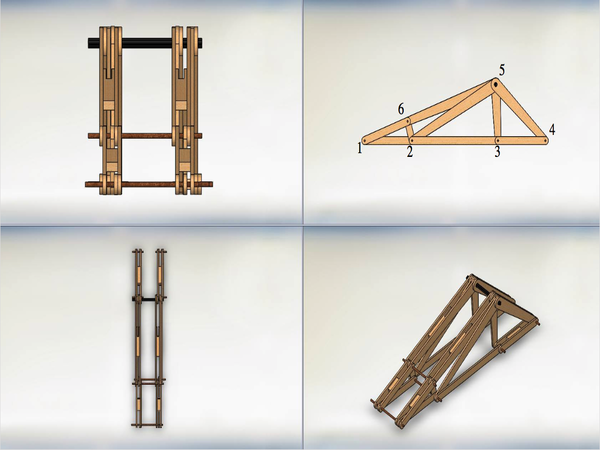
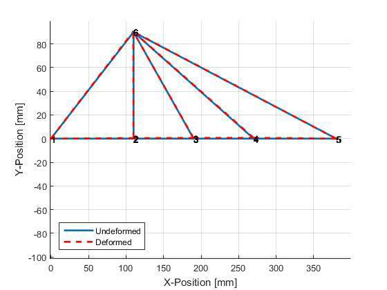
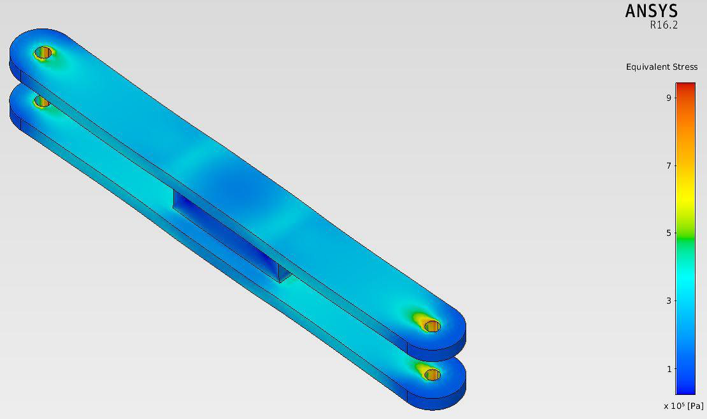
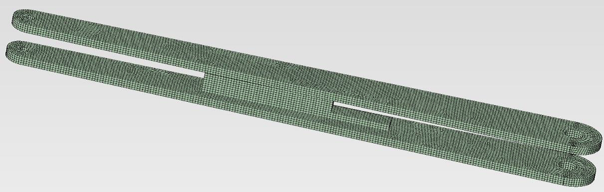
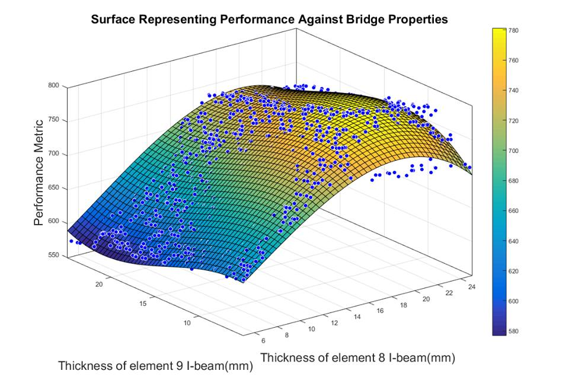
Weights Analyst
Advance Concepts Architecture & Mass Properties Department Pratt & Whitney Canada
I learned about big company procedures in the highly regulated industry of aerospace. As part of my main project, I worked hard to deliver a meaningful tool and the resulting analysis. My project proved successful in the original intent and received high praise for the detailed analysis. As an analytical position, I worked as part of a large engineering team providing detailed results to Design.
Completed a 40 hour CATIA V5 Fundamentals course by Mecanica Solutions
Completed Hands-on PW308 Gas Turbine Engine Assembly Course
Performed weight analysis of engine parts and assemblies for Engineering Change (EC) reports
Conducted rotor burst analysis for critical rotating parts per FAA standards and P&WC best practices
Calculated inertia values for rotor balance assemblies
Validated mass properties & material specifications for new parts
Provided software development support to ENOVIA PLM team working on customized applications
Project: Manufacturing Scatter Analysis Tool
Investigated manufacturing scatter for 6 production engine programs
Analyzed EC reports to normalize large raw engine weight data sets
Performed detailed statistical analysis and risk models using Six Sigma methodology
Coded custom macros in VBA (MS Excel) for robust data collection and analysis
Created detailed instruction manual for use and troubleshooting developed tool
Drafted work term report on tool development based on Waterfall model
Presented scatter analysis results to Advance Design for reviewing customer commitments
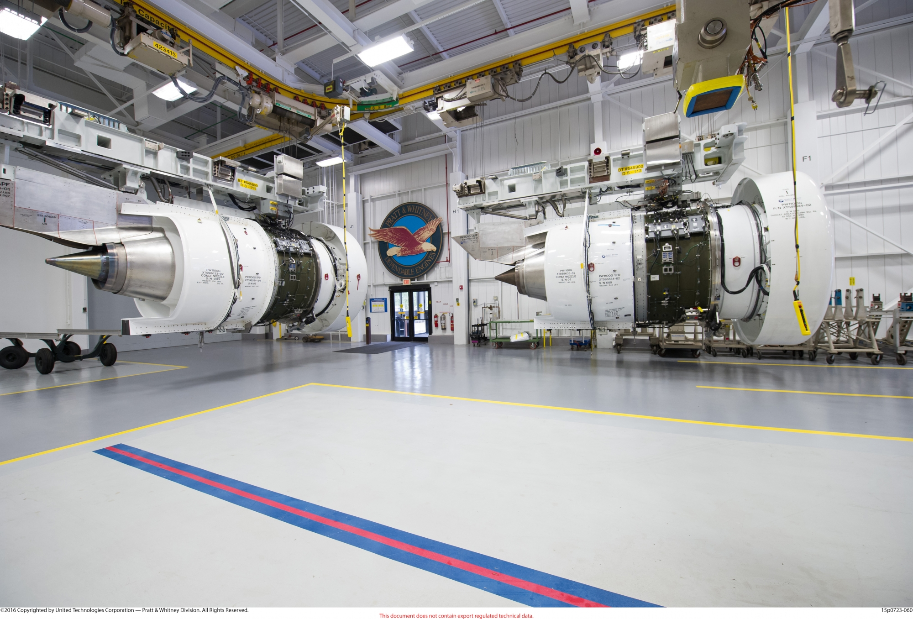
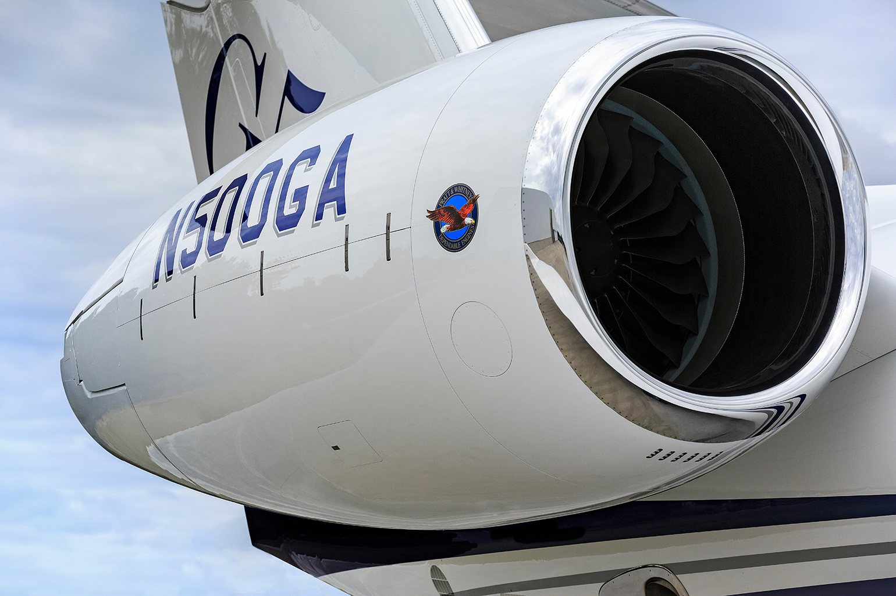
Temperature Sensor
Project Manager University of Waterloo
Utilized thermistor for raw temperature readings
Processed data and calibrated sensor using Arduino to achieve 1°C accuracy
Developed interface with buttons and LED display for increased functionality
Accomplished in projected timeline with desired design specs
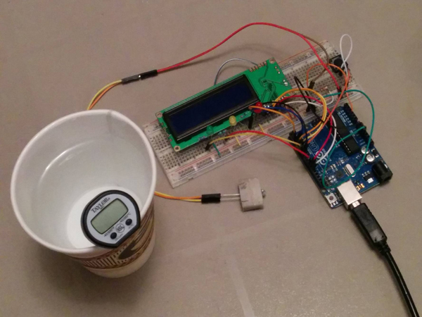
Path Detection Robot
University of Waterloo
Programmed and constructed line following robot on custom PCB board
Characterized motors and constructed light sensors using IR LEDs and photodiodes
Utilized oscilloscope to test and verify hardware
Integrated sensors including optical encoders, thermistors and Hall Effect sensors
Calculated values for circuits and soldered components
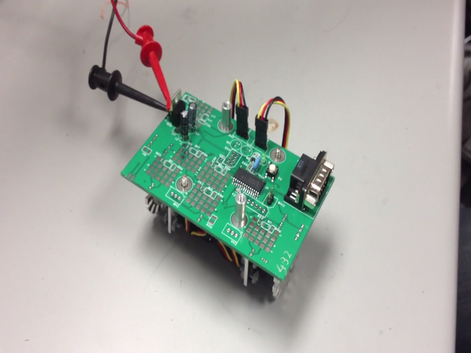
Symptom Tracker
Team Leader Hack4Health Hackathon
Designed GUI for multiple sclerosis patient survey of symptoms rated from 1 -10
Developed relational database to store data using user friendly features coded in SQL
Performed statistical analysis to detect negative trends in symptoms
Coded macro in VBA to automatically send warning emails to family members/caretakers
Finalist at Hack4Health competition
Audio Player
University of Waterloo
Programmed audio player in C using FPGA board
Utilized SD card to read audio file in chunks to write data to stereo buffers
Designed user friendly design with multiple button functionality using interrupts
Built using multiple programs including Altera Toolchain, QSYS, Quartus and NIOS build tools
Gumball Sorting Robot
Project Manager University of Waterloo
Designed and constructed structurally sound robot to sort gumballs by colour
Integrated multiple sensors and motors to isolate, inspect and place gumballs
Programmed and tested software coded in C
Displayed efficiency rate, time elapsed and any error messages
Fuel Cell Car
Project Manager University of Waterloo
My team used a MSP 430 microcontroller to program a robot to follow a line. The coding was completed in C and relied on ultrasonic, touch and light intensity sensors. The robot was powered by fuel cells.
Microbiology Research
Extended Essay Turner Fenton Secondary School
I completed a microbiology research extended essay for the International Baccalaureate (IB) diploma requirement. The investigation was focused on determining the effects of temperature variation on bacterial growth using active E. coli. I designed the experiment to ensure accurate data collection. I conducted the experiment with the application of advanced equipment including an incubator, vortex machine & micropipettes. I borrowed supplies from a York University Laboratory with the mentorship of a doctorate biochemical researcher. With the final data, I performed multiple analytical techniques with appropriate statistical calculations.
Home Library Database
Turner Fenton Secondary School
I created and designed a relational database in Microsoft Access to store a record of books in my home library. I utilized SQL coding and customized Photoshop images for user friendliness. I designed data entry forms, a splash screen, a main menu and included macro coding.
Air Cadet
892 Snowy Owl Squadron Royal Canadian Air Cadets
I had been involved with Air Cadets for 6 years from the age of 12 to 17. I obtained the positions of Flight Commander and Senior Instructor. I also earned the rank of Flight Sergeant. I instructed classes on aviation, meteorology, survival, creative thinking, leadership and drill. I commanded a flight of 100 cadets on parade with extreme precision of drill and communication. We were also very active in the community with events including Remembrance Day parades and poppy sales for the Veteran’s Legion.